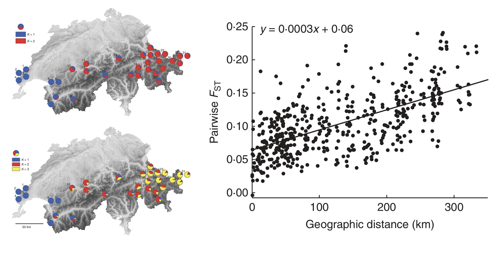

13 Population Subdivision
Up until this point, our models have focused on the dynamics of a group of individuals that mate randomly with respect to a locus of interest—a genetic population, or deme. Within species, however, geography, ecology, and happenstance frequently produce complex patterns of nonrandom mating among individuals. A simple natural example of this phenomenon might be flowering plants arranged on either side of a large river. While pollinators occasionally cross this barrier to exchange genes between geographically distant individuals, mating is far more likely among those found on the same bank. In conservation genetics, habitat fragmentation, road construction, and other sources of anthropogenic change can have similar impacts on mating probabilities and gene flow. The effect is to generate population genetic structure, also referred to as population subdivision.
We build off our understanding of inbreeding depression to model population subdivision. Consider two populations: in then first, we find 324 \(A_1A_1\) individuals, 72 \(A_1A_2\) individuals, and 4 \(A_2A_2\) individuals. In the second, we find 36 \(A_1A_1\) individuals, 168 \(A_1A_2\) individuals, and 198 \(A_2A_2\) individuals. In population 1, \(f(A_1)=720/800=0.9\) and \(f(A_2)=80/800=0.1\). In population 2, \(f(A_1)=240/800=0.3\) and \(f(A_2)=560/800=0.7\).
Are these populations in HWP? Yes: In population 1, expected frequencies are \(f(A_1A_1)=400*0.9^2=324\), \(f(A_1A_2)=400*2*0.9*0.1=72\), and \(f(A_2A_2)=400*0.1^2=4\). In population 2, expected frequencies are \(f(A_1A_1)=400*0.3^2=36\), \(f(A_1A_2)=400*2*0.3*0.7=168\), and \(f(A_2A_2)=400*0.7^2=196\). But the situation changes if we lump both together and treat them as a single, putatively randomly mating population. Now, \(f(A_1)=0.6\) and \(f(A_2)=0.4\) overall, leading us to expected frequencies of \(f(A_1A_1)=800*0.6^2=288\) (fewer than the 360 observed), \(f(A_1A_2)=800*2*0.6*0.4=384\) (greater than the 242 observed), and \(f(A_2A_2)=800*2*0.4*0.4=128\) (fewer than the 202 observed).
This observed excess of homozygotes and observed deficit of heterozygotes is known as the Wahlund Effect, and is an analog to the defecit of heterozygosity seen in inbred populations. In subdivided populations—the norm in conservation biology—we expect average genotype frequencies to diverge from HWP as they do under inbreeding. This leads us to a so-called “family” of \(F\)-statistics. The first we have already covered in depth: the inbreeding coefficient is defined as the ratio of observed hetrozygosity to expected heterozygosity:
\[ F_{IS} = 1 - \frac{H_o}{H_e} \]
Next we have Wright’s fixation index, or \(F_{ST}\), which is the ratio of the expected heterozygosity of each subpopualtion averaged to the expected heterozygosity based on the average allele frequencies of all populations lumped together (the \(S\) in \(H_S\) stands for “subdivided”, while the \(T\) in \(H_T\) stands for “total”):
\[ F_{ST} = 1 - \frac{H_S}{H_T} \]
\(F_{ST}\) for our example above is therefore \(1 - \frac{242}{384}=0.3697\): “significant differentiation”, according to the commonly applied benchmark of \(F_{ST}=0.15\).
(The third major statistic in the family, \(F_{IT}\), is not covered in class.)
Interestingly, we can model the impacts of population subdivision on expected allele frequencies either as a consequence of inbreeding or as a consequence of drift (recall that \(\frac{pq}{2N}\) is the variance of the binomial distribution):
| genotype | frequency under inbreeding | frequency under drift |
|---|---|---|
| \(A_1A_1\) | \(p^2 + Fpq\) | \(p^2+\frac{pq}{2n}\) |
| \(A_1A_2\) | \(2pq(1-F)\) | \(2pq-2(\frac{pq}{2n})\) |
| \(A_2A_2\) | \(q^2 + Fpq\) | \(q^2+\frac{pq}{2n}\) |
Here, you should see that the change in homozygosity is \(2*pq*\frac{1}{2N}\)—in other words, 2 times the product of allele frequencies multipled by the per-generation loss of heterozygosity. Correspondingly, the increase in frequency for both \(p^2\) and \(q^2\) leads to a a loss of homozygosity of \(2*pq*\frac{1}{2N}\)*. (\(\frac{pq}{2N}\) is the formula for the variance after a single generation; we can refer to the variance after any number of generations more generally by \(\sigma^2\))
We can understand the relationship with a simple example. Given allele frequencies \(f(A_1)=0.7\) and \(f(A_2)=0.3\), \(H_e=2*0.7*0.3=0.42\) and an inbreeding coeficient of \(F=0.64\), heterozygosity is reduced to \(2pq(1-F)=0.42(1-0.64)=0.15\). Approaching the same scenario through the lens of drift, we would first need to determine the number of generations required to achieve an inbreeding coefficient of 0.67 in our model of decay of heterozygosity through time. We will imagine there are \(N=10\) individuals:
\[ F = 1 - (1 - \frac{1}{2N})^t \] \[ 0.64 = 1 - (1 - \frac{1}{2*10})^t \] \[ 0.64 = 1 - (0.95)^t \] \[ 1 - 0.64 = 0.95^t; \text{ }0.358=0.95^t \] \[ log(0.358) = t*log(0.95) \] \[ \frac{log(0.358)}{log(0.95)} = t \sim 20 \text{ generations} \] Variance in allele frequencies after 20 generations will therefore be \(\sigma^2=pq(1-(\frac{1}{2N})^{20})=0.7*0.3*(1-(\frac{1}{20})^{20})=0.135\). The expected heterozygosity is thus \(2pq-\sigma^2\): \(2*0.7*0.3-2*0.135=0.15\). In other words, the same answer, regardless of how you model it!
In the absence of natural selection, population subdivision reflects a balance between genetic drift and migration. A second important \(F_{ST}\) estimator is derived on the basis of this observation. We begin by noting that the probability two alleles are identical by descent is equal to the product of the alleles are IBD in the focal population, weighted by the proportion of alleles that are not migrants (\((1 - m)^2\), the exponent reflecting the probability of not drawing a migrant allele twice). Because migrant alleles will by definition not be IBD with alleles in the focal population, this will reduce \(F_t\) below expectations in the absence of migration:
\[ F_t = [\frac{1}{2N} + (1 - \frac{1}{2N})F_{t-1}](1 - m)^2 \]
This simplifies to the following expression:
\[ F_t = [\frac{1}{2N} + F_{t-1} - \frac{F_{t-1}}{2N}](1 - m)^2 \] At an equilibrium between drift and migration, the probability of two alleles being IBD will not change between generations (\(F_t=F_{t-1}\)):
\[ \hat{F} = [\frac{1}{2N} + \hat{F} - \frac{\hat{F}}{2N}](1 - m)^2 \] We can now distribute \((1-m)^2\) across the terms in brackets:
\[ \hat{F} = \frac{(1-m)^2}{2N} + \hat{F}(1-m)^2 - \frac{\hat{F}(1-m)^2}{2N} \] We continue simplifying:
\[ \hat{F} - \hat{F}(1-m)^2 +\frac{\hat{F}(1-m)^2}{2N} = \frac{(1-m)^2}{2N} \] \[ \hat{F}(1 - (1-m)^2 +\frac{(1-m)^2}{2N}) = \frac{(1-m)^2}{2N} \] \[ \hat{F}(1 - (1-m)^2 (1-\frac{1}{2N})) = \frac{(1-m)^2}{2N} \]
\[ \hat{F} = \frac{(1-m)^2}{2N}\frac{1}{(1 - (1-m)^2(1 - \frac{1}{2N}))} \] \[ \hat{F} = \frac{(1 - m)^2}{2N - 2N(1 - m)^2(1 - \frac{1}{2N})} \]
\[ \hat{F} = \frac{(1 - m)^2}{2N - (1 - m)^2(2N-1)} \] \[ \hat{F} = \frac{(1 - 2m + m^2)}{2N - (1 - m)^2(2N-1)} \] \[ \hat{F} = \frac{(1 - 2m + m^2)}{2N - (1 - 2m + m^2)(2N-1)} \] Because \(m^2\) is likely to be extremely small, we can ignore it in both the numerator and the denominator:
\[ \hat{F} = \frac{(1 - 2m )}{2N - (1 - 2m)(2N-1)} \] \[ \hat{F} = \frac{(1 - 2m )}{2N - 2N + 4Nm + 1 - 2m} \]
By similar logic, we can assume \(2m\) is very small and ignore it as well, which brings us to our final equation:
\[ F_{ST} = \frac{1}{4Nm + 1} \]
For example, if have a population of size 50 and a migration rate of 0.1, we expect an equilibirum level of differentiation of \(F_{ST} = \frac{1}{4*50*0.1 + 1} = 0.047\).
The inverse relationship between \(F_{ST}\) and the product of \(N_e\) in the source population and the migration rate \(m\) leads to the expectation that populations that are more geographically isolated from each other—such as those greater distances apart—will have higher \(F_{ST}\) values. Ægisdóttir and colleagues (Ægisdóttir, Kuss, and Stöcklin (2009)) tested this prediction (of what is known as the “isolation by distance” hypothesis) in 32 populations of the alpine perennial Campanula thyrsoides across Switzerland. Genotyping 736 individuals from 32 populations at 5 microsatellite loci, they found that pairwise \(F_{ST}\) was indeed correlated with linear geographic distance.
